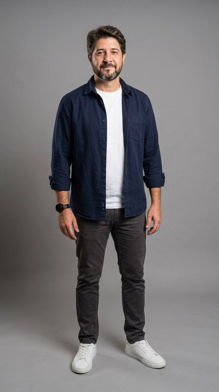

Você sai da sua foto de perfil, apaga o número de seguidores e escreve o número que quer ter. Ninguém gravou nada: é um print, uma foto sua e IA.
Print do perfilno modo escuro
Uma foto suade corpo inteiro
Magnificplano pago
30 minutoscom as esperas
Antes de começar
Como o truque funciona
A IA de vídeo recebe duas imagens: como o vídeo começa (o print do seu perfil) e como ele termina (você na frente da tela, já com o número novo). Ela inventa o movimento entre as duas.
Por isso o segredo não está no vídeo, está no quadro final. Se o quadro final ficar bom, o vídeo quase sempre fica bom.
Começo · printFim · quadro final
Passo 1
Tire o print do seu perfil
Tudo o que aparecer no print aparece no vídeo. Arrume antes.
Modo escuro ligado.O contraste com a sua roupa fica melhor e o vídeo parece mais "app de verdade".
Sem notificação na tela.Bolinha vermelha, aviso de bateria fraca: tudo isso vai para o vídeo.
Seus posts mais bonitos na grade.Se quiser, fixe no topo os três melhores antes de tirar o print.
Foto de perfil com você.Rosto visível, de frente. É dela que você vai "sair" no vídeo.
Passo 2
Escolha uma foto sua de corpo inteiro
É ela que ensina à IA como é o seu corpo e a sua roupa. Uma foto real funciona melhor do que qualquer foto gerada.
Da cabeça aos pés.Sem cortar os sapatos.
Fundo liso e luz boa.Uma parede clara, de dia, perto da janela.
A roupa que vai aparecer no vídeo.Cores sólidas funcionam melhor do que listras e estampas.

A foto de referência que eu usei
Se você usar a foto de perfil como referência do rosto, anexe as duas no passo 3. Quanto mais a IA conhece você, menos ela inventa.
Passo 3
Crie o quadro final
No Magnific, abra a geração de imagem, escolha o modelo Nano Banana Pro e o formato 9:16. Anexe nesta ordem: 1) o print, 2) a foto de corpo inteiro. Cole o prompt e troque os trechos destacados.
Prompt do quadro final
imagem · 9:16
Edite a primeira imagem (a tela de um perfil do Instagram em modo escuro) mantendo EXATAMENTE iguais toda a interface, o layout, os textos, os ícones e as fotos da grade. Mude só estas três coisas:
1. A foto de perfil redonda, no canto superior esquerdo, fica VAZIA: um círculo cinza liso (a pessoa saiu da foto). O "+" pequeno continua.
2. O número 221 acima de "seguidores" é trocado pelo texto "10 MIL" escrito à mão com marcador branco grosso, um pouco irregular, como letra de verdade. Os outros números não mudam.
3. A pessoa da segunda imagem (o mesmo rosto, o mesmo cabelo, a mesma roupa) aparece EM PÉ NA FRENTE da tela, de corpo inteiro e hiper-realista, como se fosse uma pessoa pequena andando sobre o celular: um pouco à direita do centro, pés perto da borda de baixo, cabeça na altura da bio, corpo virado três quartos para a câmera, olhando para a câmera com um sorriso orgulhoso, segurando um marcador preto na mão direita e um pano branco amassado na esquerda. Ela não cobre o "10 MIL" nem o nome do perfil. Sombra suave dela sobre a tela. Foto realista.
Anexo 1 · printResultado · Nano Banana Pro
Peça 2 variações de uma vez e fique com a melhor. Eu gerei duas e usei a que deixou o corpo maior na tela.
Confira antes de seguir
O nome do perfil, a bio e o link continuam escritos certinho?
Só o número de seguidores mudou?
O rosto é o seu, e não "alguém parecido"?
As mãos têm cinco dedos e seguram o marcador e o pano?
Se algo saiu errado, responda na mesma geração:
Você alterou o texto da bio. Refaça mantendo a interface idêntica à primeira imagem.
Passo 4
Gere o vídeo
No Magnific, abra a geração de vídeo, formato 9:16. Em quadro inicial, coloque o print. Em quadro final, coloque a imagem do passo 3. Cole o prompt abaixo, que conta a cena segundo a segundo.
Prompt do vídeo
vídeo · 9:16 · 10 a 12 s
Câmera totalmente parada e travada. O quadro inteiro é a tela de um perfil do Instagram em modo escuro, como uma parede gigante. A interface NUNCA se mexe, deforma ou muda: todos os textos, ícones, números e fotos da grade continuam nítidos e iguais o tempo todo, exceto o que está descrito abaixo.
0–2s: a pessoa da foto de perfil redonda ganha vida. Ela se inclina para a frente, a cabeça e os ombros saem do círculo em 3D, ela se apoia na borda do círculo com as duas mãos, sai da foto e pula na tela como uma pessoa de verdade, de corpo inteiro. Quando ela sai, o círculo fica cinza e vazio.
2–4s: ela cai de leve, anda para a direita de costas para a câmera e para logo abaixo do número de seguidores, tirando um pano branco do bolso de trás.
4–7s: de costas, ela estica o braço e esfrega o número "221" com o pano, em círculos rápidos, até ele sumir. A palavra "seguidores" fica.
7–10s: ela passa o pano para a mão esquerda, destampa um marcador preto e, ainda de costas, escreve "10 MIL" à mão, em traço branco grosso, letra por letra.
10–12s: ela dá um passo para trás, se vira três quartos para a câmera com um sorriso orgulhoso e para na pose do quadro final.
Mesmo rosto da foto de perfil do começo ao fim, física natural do corpo, sombra realista sobre a tela, luz suave. Sons: pulo leve, passos, pano rangendo, marcador riscando. Sem música e sem voz. Evite: texto da interface mudando ou derretendo, outras pessoas, câmera se mexendo, piscadas de luz, mãos deformadas, rosto mudando.
0,7 s5 s9,3 s12 s
Quadros do vídeo que eu publiquei, gerado com este prompt na primeira tentativa.
Qual modelo escolher (e quanto custa)
O custo é em créditos do Magnific, e cada tentativa cobra de novo. Os valores abaixo são os que o próprio Magnific calculou para este vídeo, com início e fim definidos:
Modelo
Configuração
Créditos
Kling 2.5Mais barato. Sem som: você coloca o áudio depois.
10 s · 1080p
650
Seedance 2.0 MiniBom equilíbrio, já vem com som.
12 s · 720p
1.680
Seedance 2.0 FastRápido, com som.
12 s · 720p
2.820
Seedance 2.5O que eu usei. O mais realista, com som.
12 s · 1080p
9.480
Cada imagem do passo 3 custa 75 créditos. Comece pelo Kling 2.5: se o movimento ficar bom, você já tem o seu reel. Só suba de modelo se precisar de mais realismo.
Eu testei os dois com os mesmos quadros. No Kling 2.5 (650 créditos), eu saio da foto, pulo, ando até o número e escrevo "10 MIL", mas o "221" some sozinho antes de o pano chegar e o movimento é mais simples. Dá para publicar. No Seedance 2.5 (9.480 créditos), cada ação acontece na hora certa e o vídeo já vem com som. A diferença de preço é de quase 15 vezes.
Seja realista: a IA não acerta sempre. Às vezes a interface treme, a mão erra ou o número sai torto. Conte com uma ou duas tentativas no orçamento. E não use o rosto de outra pessoa: faça com você.
Passo 5
Coloque o texto e publique
Não peça para a IA escrever o texto por cima do vídeo: ela ainda erra letras. Coloque depois, no CapCut ou no próprio editor do Instagram, fixo do começo ao fim, na parte de baixo da tela (para não cobrir o número novo).
Tem um número errado no meu perfil.Só você pode corrigir.
Na legenda, conte o truque."Esse vídeo não teve câmera." A curiosidade sobre como foi feito gera mais comentário do que o pedido para seguir.
Termine com um convite."Segue e compartilha com quem precisa ver isso."
Marque como feito com IA.Ao publicar, ative o rótulo de IA do Instagram. Transparência protege a sua reputação.
Sua vez
Fez o seu? Me mostra.
Me marca no seu reel ou manda no meu direct. Eu respondo pessoalmente e te digo o que dá para melhorar.
Esse é um vídeo. Na Ilha de Edição eu mostro como montar no seu Claude um estúdio de conteúdo inteiro: reels editados, carrosséis, stories e direct automático, sem equipe.